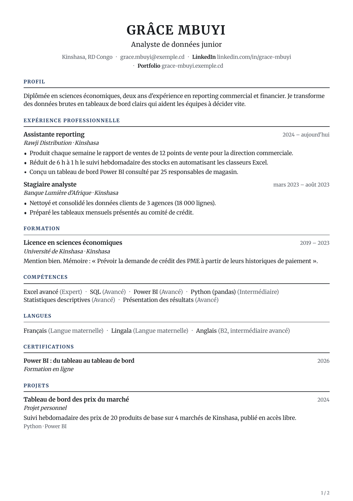

Career · CV Data analyst · Mise en forme
Mon CV
EspacePersonnel
Rechercher sur Jumanly
GM
Grâce MbuyiTalent · Pro
Accueil Career
Diagnostic de carrière
Mon CVLettres et documents
Préparation LinkedInSimulations d'entretien
Plan de progression
Portfolio
ContenuMise en forme

ClassiqueLisible par les logiciels de recrutement
ChangerCouleur d'accentRecommandées pour les logiciels de recrutement
Autres couleurs
#1B365D Contraste 12,1:1
Le texte reste noir sur fond blanc. La couleur ne sert qu'aux titres, aux filets et aux décors.PoliceToutes les polices sont intégrées au PDF.
AaSoraRecommandée
AaInter
AaSource Sans 3
AaLato
AaMerriweather
AaLora
Densité
AéréeStandardCompacte
Afficher ma photo sur le CVFacultatif. De nombreux recruteurs préfèrent un CV sans photo.
Langue des titres
FrançaisEnglish
Seuls les titres de sections changent. Votre texte n'est pas traduit. Enregistré
Partager
PDF

Pages2 sur 3 au maximum
Page 1
Page 2
Ajouter
Exporter mon CV
PDF (recommandé)
Word
CV-Grace-Mbuyi.pdf · 2 pages · texte sélectionnable
TéléchargerVotre CV ne porte ni logo ni mention Jumanly.